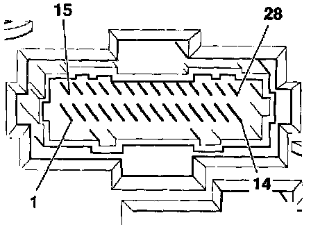

Connector Views
Terminal Identification For Instrument Cluster 28-pin Connector Socket 1 (-T28-):
1- Outside air temperature sensor -G17-, Ground (GND) 1)
2- Engine Coolant Level (ECL) sensor -G32-
3- Terminal 31, Ground (GND)
4- Multi-function indicator memory switch -E109- (reset) 1)
5- Terminal 31, Ground (GND)
6- Multi-function indicator memory switch -E109- (memory) 1)
7- Vehicle Speed Sensor (VSS) output
8- Oil pressure switch -F1-, 1.8 bar
9- 0.3 bar oil pressure switch -F22-
10- Terminal 1/terminal W
11- Terminal 30, battery positive voltage (B+)
12- Terminal 58b, lighting
13- Terminal 15 (B+ with ignition switched on)
14- Open
15- Multi-function indicator mode select switch -E86-1
16- Generator (GEN) warning light -K2-, terminal 61
17- Engine oil temperature sensor -G8- 1)
18- Brake and parking brake warning light -K7-
19- Outside air temperature sensor -G17-, signal 1)
20- Malfunction Indicator Lamp (MIL) -K83-, or glow plug indicator light -K29- (Diesel)
21- Fuel gauge -G1-
22- Left turn signal indicator light -K65-
23- Engine Coolant Temperature (ECT) gauge -G3-
24- Right turn signal indicator light -K94-
25- Headlight high beam indicator light -K1-
26- Input signal, fuel consumption 1)
27- Vehicle speed signal from speedometer Vehicle Speed Sensor (VSS) -G22-
28- Transmission Range (TR) selector lever display (AG4)
1) Only with multi-function indicator -J119-